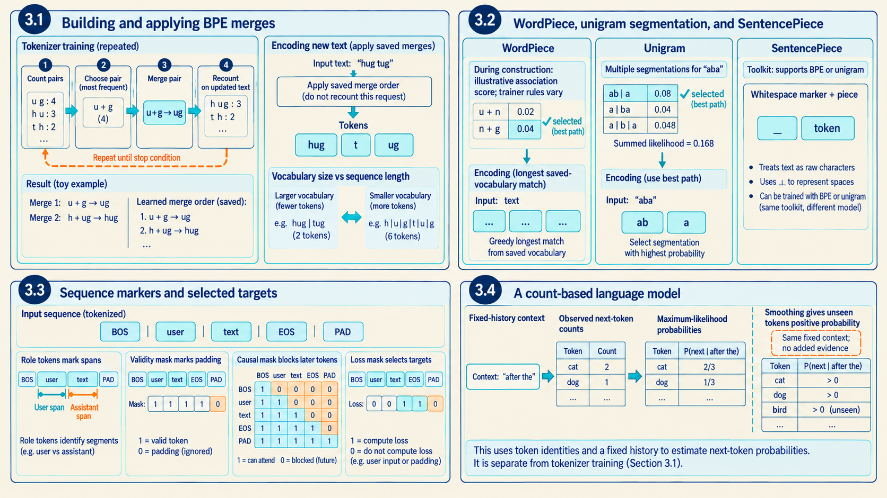
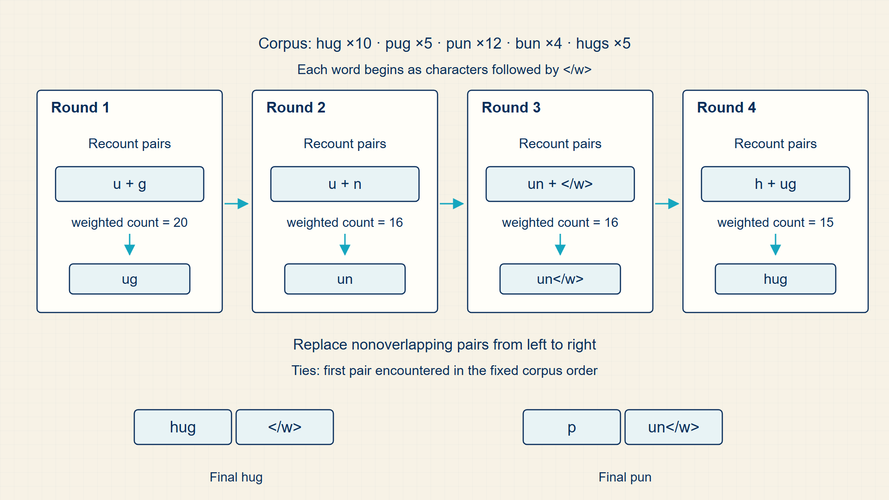
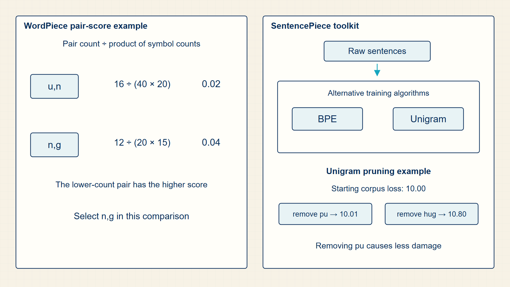

3 Subwords and sequence counts
Reusable subword pieces balance vocabulary size against sequence length, while continuation counts supply a fixed-history prediction baseline.
A whole-word vocabulary needs a separate entry for each supported word and can fail on an unfamiliar form. A character vocabulary reuses a small set of symbols but usually needs more positions for the same text. Reusable pieces between those extremes can shorten sequences without reserving an entry for every word.
Training a subword tokenizer selects a vocabulary from text. Encoding new text applies that saved vocabulary and its rules. Different rules for selecting pieces, handling boundaries, and representing unfamiliar characters produce different sequences. The vocabulary-building method and the software that implements it are separate choices.

3.1 Building and applying BPE merges
Allocating a vocabulary entry to a frequent fragment can reduce the number of positions needed every time that fragment appears. Byte Pair Encoding (BPE) builds reusable pieces by repeatedly merging a frequent adjacent pair. It adapts the pair-replacement idea of byte-based compression to a text representation whose starting units and boundaries are specified by the tokenizer.1
A corpus is a collection of texts used for a language-processing task. During vocabulary construction, BPE counts adjacent pairs in the currently represented training corpus. The selected pair is the one with the greatest count:
\[ (a^\star,b^\star)=\operatorname*{arg\,max}_{a,b}\operatorname{count}(a,b) \tag{3.1}\]
Here \((a,b)\) is an adjacent pair, \(\operatorname{count}(a,b)\) counts its occurrences, and \(\arg\max\) returns a pair attaining the maximum. The star marks the selected pair. This is a greedy choice based on current counts, without searching all future merge sequences.
The tokenizer then replaces matching non-overlapping occurrences by one symbol and recounts pairs. Counting overlapping candidates can yield more occurrences than can be replaced in one pass, so replacement order must be defined. Tied counts also need a rule. Word boundaries may block merges or appear as symbols themselves. Either choice changes the available pairs.
If the joined piece is new, it is added to the vocabulary:
\[ V_{k+1}=V_k\cup\{a^\star b^\star\} \tag{3.2}\]
\(V_k\) is the vocabulary after \(k\) rounds and \(a^\star b^\star\) denotes concatenation of the selected strings. The union \(\cup\) adds the piece while retaining existing entries. Adding it changes which pieces are available. Replacing pairs changes the represented corpus. Both steps are needed before the next round.
For a small count comparison, suppose l o occurs 30 times and o w occurs 12 times, with no larger pair count. The first merge is l o into lo. Learning that merge adds the new piece lo to the vocabulary once. Applying it can then replace each eligible non-overlapping occurrence. Every replacement shortens the represented sequence by one position, so 30 replaced occurrences can remove 30 positions while using one new vocabulary entry. In a separate round with 100 vocabulary entries, adding a previously absent low by joining lo and w gives 101 entries.
The figure illustrates one pair count and replacement. Each later merge requires counting adjacent pairs again in the updated representation.

The following full trace makes the boundary and tie choices explicit. Its end-of-word marker competes with letter pairs, so omitting that marker would change the result.
Example: BPE vocabulary construction
The training corpus has five word types with frequencies: h u g </w> occurs 10 times, p u g </w> 5 times, p u n </w> 12 times, b u n </w> 4 times, and h u g s </w> 5 times. The marker </w> is a separate end-of-word symbol. The initial vocabulary has eight symbols: h, u, g, p, n, b, s, and </w>.
Pair counts are weighted by these word frequencies. Merges may include </w> but do not cross from one word into another. Ties use first-seen order while scanning the listed words from left to right.
Round 1. The leading counts are (u,g): 10+5+5=20, (p,u): 5+12=17, and (u,n): 12+4=16. Boundary pair (n,</w>) also has count 16. The pair (g,s) has count 5. The maximum is 20, so u g becomes ug.
Round 2. After replacement, (h,ug) has count 15, (ug,</w>) 15, (p,ug) 5, and (u,n) 16. The pair (n,</w>) still has count 16. The tie rule selects the first of those maxima, (u,n), which becomes un.
Round 3. The pair (un,</w>) now has count \(12+4=16\). It exceeds (h,ug):15 and (ug,</w>):15, so the new symbol is un</w>. The other pairs include (p,un):12 and (b,un):4 before this replacement.
Round 4. The leading pairs (h,ug) and (ug,</w>) each have count 15. First-seen order chooses (h,ug), creating hug.
The vocabulary now contains the original eight symbols plus ug, un, un</w>, and hug, for a total of 12. In the represented corpus, hug is followed by </w>, while pun is represented by p and un</w>.
Conclusion: Recounting includes boundary symbols as well as letters. Here hug appears at the fourth merge, not the third. A vocabulary-size limit affects which useful pieces have been learned when training stops.
Vocabulary construction ends with saved pieces, IDs, and an ordered list of merges. Encoding new text applies that saved merge order. It does not estimate new pair frequencies from each request. A saved model must be used with compatible tokenizer files, because its learned token vectors and output scores assume the same ID meanings.
A separate encoding example uses a smaller saved vocabulary: b, g, h, n, p, s, u, ug, un, and hug, plus an UNK fallback. Its saved merges are u+g→ug, u+n→un, and h+ug→hug. Unlike the boundary-aware construction above, this illustration omits </w> and has no un</w> entry.
For bug, the initial pieces b,u,g become b,ug. For mug, m is unsupported, so the result is UNK,ug. For thug, t is unsupported and the remaining h,u,g first become h,ug, then hug, giving UNK,hug. The later merge can apply because the earlier one created ug.
These results expose two separate requirements: saved merge order determines which supported pieces combine, and initial character coverage determines what can be represented at all. Some tokenizers use byte fallback, representing otherwise unsupported text through byte units. BPE alone does not guarantee that every rare form avoids character-level pieces or unknown tokens. Normalization and the configured fallback remain part of the input contract from Chapter 2.
The GPT-2 tokenizer used in §2.2 takes a different starting point from this character example. Byte-level BPE divides text into chunks and encodes each chunk as UTF-8 bytes. It maps all 256 possible byte values to reversible symbols, then applies saved BPE merges within each chunk.2 The letter m in mug has the UTF-8 byte value 6D, so it has a starting unit even though the small character vocabulary above lacks m. A character such as é uses two UTF-8 bytes, C3 A9, before any merges. Byte-level coverage avoids an unknown token for ordinary valid text, but a rare character may take several token positions. The saved GPT-2 vocabulary and merge order, not the toy vocabulary, determine its final IDs.
A word-level vocabulary implementation receives a token string \(s\). Its vocab maps known strings to IDs, and UNK is the configured fallback:
\[ \operatorname{id}(s)=\begin{cases}\operatorname{vocab}[s],&s\in\operatorname{vocab},\\ \operatorname{UNK},&\text{otherwise}.\end{cases} \tag{3.3}\]
If vocab["cat"] is 1 and UNK is 0, cat maps to 1 and an unsupported word maps to 0. Different unknown words then share one identity. A tokenizer with subword or byte coverage can retain more distinctions. This lookup determines which token identities a later count model can observe.
3.2 WordPiece, unigram segmentation, and SentencePiece
A frequent pair can owe much of its count to two pieces that are common everywhere. Another vocabulary rule can favor how strongly a pair occurs together relative to its parts. Boundary handling is a separate choice: splitting on whitespace before training prevents merges across those boundaries regardless of the scoring rule.
WordPiece is a subword method whose saved vocabulary supports longest-match tokenization. A common notation uses ## to distinguish a continuation piece from one at the start of a word. The pair score below illustrates one proposed training rule, following the Hugging Face course’s reconstruction from published literature. That course identifies the original Google trainer as unreleased. This formula is not a guarantee about the algorithm used by a particular library trainer.3
\[ \operatorname{score}(a,b)=\frac{\operatorname{count}(a,b)}{\operatorname{count}(a)\,\operatorname{count}(b)} \tag{3.4}\]
The numerator counts the adjacent pair \((a,b)\). The denominator multiplies the individual counts of its pieces, both positive for an observed pair. In a separate illustrative count table, pair u,n has count 16 and its parts have counts 40 and 20, giving \(16/(40\cdot20)=0.02\). Pair n,g has count 12 and part counts 20 and 15, giving \(12/(20\cdot15)=0.04\). The relative score prefers n,g although its raw pair count is smaller. These supplied counts belong to the code example below, not to the five-word corpus used for the next comparison.
The five-word corpus in §3.1 permits a direct comparison with BPE. For this WordPiece calculation, omit the end-of-word marker and mark noninitial characters with ##. Summing the five word frequencies gives 36 word occurrences. Recounting that corpus under the ## convention gives 36 occurrences of ##u, 20 of ##g, and 5 of ##s. The pair ##u,##g occurs 20 times, giving score \(20/(36\cdot20)=1/36\). The pair ##g,##s occurs 5 times, giving \(5/(20\cdot5)=1/20\). Although ##g,##s is less frequent, its higher relative score selects ##gs. Adding that piece to the seven initial character pieces gives eight entries. BPE’s first merge on the same word frequencies was ug, because BPE used the raw pair count.
The runnable Python example uses the standard-library Counter to hold these supplied counts and selects the maximum score. It illustrates this scoring rule only. It does not train or apply a full WordPiece tokenizer.
Code example: Illustrative WordPiece pair scores from supplied counts
from collections import Counter
piece_counts = Counter({"u": 40, "n": 20, "g": 15})
pair_counts = Counter({("u", "n"): 16, ("n", "g"): 12})
scores = {
pair: count / (piece_counts[pair[0]] * piece_counts[pair[1]])
for pair, count in pair_counts.items()
}
print(max(scores, key=scores.get), scores)The scores are 0.02 and 0.04, so the selected pair is ('n', 'g'). During later WordPiece encoding, longest-match search uses the saved vocabulary rather than replaying BPE merges. It chooses the longest permitted piece at the current position, then continues through the remaining text. Under the Hugging Face course’s whole-word unknown policy, failure to cover a remaining part makes the entire word UNK, even when its beginning could be covered. This differs from the character fallback in §3.1.
A unigram tokenizer assigns a probability to each vocabulary piece and uses those probabilities to compare segmentations. A segmentation is a sequence of pieces whose concatenation recovers the text being segmented. In this model, the probability of one segmentation is the product of its piece probabilities. Those piece probabilities sum to one over the vocabulary.4
For an illustrative vocabulary with probabilities a:0.4, b:0.3, ab:0.2, and ba:0.1, the string aba has three segmentations. ab,a scores \(0.2\cdot0.4=0.08\), a,ba scores \(0.4\cdot0.1=0.04\), and a,b,a scores \(0.4\cdot0.3\cdot0.4=0.048\). Maximum-probability encoding chooses ab,a. For training likelihood, all three possible paths contribute. The text’s likelihood score is \(0.08+0.04+0.048=0.168\). The highest individual segmentation and the sum over segmentations answer different questions.
Let \(q(v)\) be the probability of piece \(v\) in candidate vocabulary \(V\). For text \(s\), \(P_q(s\mid V)\) sums the products of \(q\) over all valid segmentations of \(s\). Here it is the tokenizer’s likelihood score for that supplied text. A generative probability distribution over texts of different lengths additionally needs a length or stopping rule. Vocabulary learning seeks high corpus likelihood within a vocabulary budget \(V_{\max}\):
\[ \min_{V,q}\; -\sum_{s\in C}\log P_q(s\mid V),\quad |V|\le V_{\max},\quad \sum_{v\in V}q(v)=1 \tag{3.5}\]
Here \(C\) is the training corpus, \(q(v)\geq0\), and \(\sum_{v\in V}q(v)=1\). Required base symbols constrain which vocabularies can cover the corpus. The negative natural logarithm turns a low likelihood score into a high penalty, and the sum aggregates those penalties. The size and coverage constraints prevent the formula from being an unrestricted request to add every useful string.
Practical unigram training starts with more candidates than the budget, fits their probabilities, and repeatedly prunes pieces whose removal harms corpus likelihood least before refitting.
The aba example makes one removal comparison calculable. As a deliberately simplified trial, remove one multicharacter piece and proportionally renormalize the remaining probabilities without refitting them. Removing ab leaves a:0.5, b:0.375, and ba:0.125. The two remaining segmentations give likelihood score \(0.5(0.125)+0.5(0.375)(0.5)=0.15625\). Removing ba instead leaves a:4/9, b:1/3, and ab:2/9, giving \((2/9)(4/9)+(4/9)(1/3)(4/9)=40/243\approx0.164609\).
Both removals lower the original likelihood score 0.168 and therefore increase its negative-log loss. Removing ba costs less under this trial. A full trainer assesses the corpus and refits probabilities, so this one-string calculation demonstrates the comparison rather than reproducing the complete training algorithm. Vocabulary selection uses the change in corpus loss, not a measured advantage on a downstream task.
SentencePiece is a tokenizer toolkit that supports both BPE and unigram models and can learn from raw sentences. It represents whitespace with the visible marker ▁ (U+2581), so whitespace handling need not depend on an external word splitter. The toolkit and segmentation algorithm therefore describe different choices. Recovering whitespace from pieces cannot recover distinctions that an earlier normalization step removed.5
The comparison figure brings together these choices. WordPiece encoding, a unigram probability model, and SentencePiece’s raw-text interface must remain distinct when interpreting it.

A domain token is a vocabulary piece retained or added for text from a particular field. Biomedical terms and code fragments are examples. Its usefulness depends on frequency, sequence-length savings, and compatibility with the trained model. Any tokenizer change can alter sequence length, output vocabulary size, ID meanings, and next-token targets. The resulting pieces still need additional markers when the input format distinguishes boundaries, missing content, or speaker roles.
3.3 Sequence markers and selected targets
An ordered list of text pieces does not by itself identify where a sequence ends or which part belongs to a chat speaker. The special tokens from §2.1 provide vocabulary entries for these roles. BOS and EOS mark the configured start and end, while PAD fills unused batch positions under the validity convention of §2.2.
A role token marks a span such as user, assistant, system, or tool content in a chat format. Its interpretation comes from the model’s trained format and the surrounding application’s handling. A new marker requires a compatible trained format.
Masked language modeling trains a model to recover original tokens at selected positions from a changed input. Unlike next-token prediction, it can use visible context on both sides of a selected position. A MASK token is a configured placeholder for content hidden by such a training procedure.
When MASK appears in this procedure, it hides an original token that supplies the reference answer. Selected prediction positions can also contain random or unchanged tokens under the recipe in §18.2. That section constructs the changed input and its loss together. PAD fills unused batch storage, with attention and loss exclusions following the separate rules in §2.2. With sequence units and boundaries defined, observed histories can now be counted to predict continuations.
3.4 A count-based language model
Token IDs identify pieces but supply no probability for what follows them. Observed continuation counts provide a prediction rule that can be inspected without first learning neural representations. Complete long sentences often have little repeated evidence in a corpus. Restricting the history lets several occurrences share a shorter context, at the cost of ignoring earlier information. Its limits also show what happens when the desired context is absent from training data.
An n-gram is a contiguous sequence of \(n\) tokens. A bigram contains two, and a trigram three. An n-gram language model predicts a token using at most the preceding \(n-1\) tokens. With \(n=1\), the history is empty and token counts give unconditional frequencies. A bigram model conditions on one preceding token and a trigram model on two. This fixed-history restriction is the model’s Markov assumption: earlier tokens cannot affect the prediction once they fall outside the retained suffix. For token \(w_t\) at position \(t\), the assumption replaces the full history by that suffix:
\[ P(w_t\mid w_1,\ldots,w_{t-1})\approx P(w_t\mid w_{t-n+1},\ldots,w_{t-1}) \tag{3.6}\]
The approximation limits the information available for each conditional probability. Near the start of a sequence, it uses the available history or the tokenizer’s explicit boundary markers. Sentence-boundary markers belong to the counted sequence. Batch-padding placeholders do not automatically belong to it.
For an observed history, an unsmoothed estimate divides the number of times it has a particular continuation by its total number of recorded continuations:
\[ P(w_t\mid\mathrm{context})=\frac{\operatorname{count}(\mathrm{context},w_t)}{\operatorname{count}(\mathrm{context})} \tag{3.7}\]
Here context is the retained history and \(w_t\) the candidate token. The denominator is the sum of continuation counts for that context, so the resulting probabilities sum to one. It must be positive. Among probability distributions for a fixed observed context, these relative frequencies give the highest likelihood to its recorded continuations. §8.1 explains that maximum-likelihood principle through the corresponding loss. The fitted counts stay fixed during inference.
Example: Continuations of an observed history
Suppose the training sentences are the cat sat, the dog ran, and the cat slept. A bigram model completing the finds three recorded continuations: cat twice and dog once. Thus \(P(\mathrm{cat}\mid\mathrm{the})=2/3\) and \(P(\mathrm{dog}\mid\mathrm{the})=1/3\). A maximum-probability decision selects cat.
In a separate corpus, a context appearing with ten recorded continuations is followed by one particular token three times. Its probability estimate is \(3/10=0.3\). This uses its own denominator, not the three-sentence corpus’s count.
Conclusion: Each estimate is a relative frequency within one history. A zero count for bird after the observed the gives zero probability under this rule, although it does not prove that the continuation is impossible.
An entirely unseen history has denominator zero, so the unsmoothed ratio is undefined. Even for an observed history, a missing continuation receives zero probability. Smoothing adjusts count estimates to reserve probability for unseen events.
Here \(V\) is the size of the fixed prediction vocabulary, distinct from the tokenizer budget \(V_{\max}\) in §3.2. Let \(c(h,w)\) count word \(w\) after history \(h\). Let \(c(h)=\sum_w c(h,w)\). Add-alpha smoothing adds the same positive count \(\alpha_{\mathrm{sm}}\) to each possible continuation:
\[ P_{\alpha_{\mathrm{sm}}}(w\mid h)=\frac{c(h,w)+\alpha_{\mathrm{sm}}}{c(h)+\alpha_{\mathrm{sm}}V},\quad \alpha_{\mathrm{sm}}>0 \tag{3.8}\]
The numerator is \(c(h,w)+\alpha_{\mathrm{sm}}\), and the denominator is \(c(h)+\alpha_{\mathrm{sm}}V\). Summing all \(V\) numerators gives that denominator, so the probabilities sum to one. With \(\alpha_{\mathrm{sm}}>0\), every vocabulary entry has positive probability even for an unseen history. This does not assign separate identities to words already mapped to UNK.
Example: Seen and unseen continuations
Continue the the history above, with counts cat:2, dog:1, and bird:0. Restrict this illustration’s prediction vocabulary to those three tokens and choose \(\alpha_{\mathrm{sm}}=1\).
The adjusted denominator is \(3+1(3)=6\). Probabilities become \(P(\mathrm{cat}\mid\mathrm{the})=3/6\), \(P(\mathrm{dog}\mid\mathrm{the})=2/6\), and \(P(\mathrm{bird}\mid\mathrm{the})=1/6\).
For a completely unseen history, all three original counts are zero. The same rule gives \(1/3\) to every continuation. Every continuation now has positive probability.
Conclusion: Added counts produce a defined distribution for both failures. For an observed history, add-alpha moves each probability toward \(1/V\). Values above \(1/V\) decrease, values below it increase, and equal values stay unchanged. Here the probability of cat falls from \(2/3\) to \(1/2\), while dog stays at \(1/3\). The history’s observed count, vocabulary size \(V\), and smoothing strength \(\alpha_{\mathrm{sm}}\) together determine how far those estimates move toward a uniform distribution.
For fixed counts, increasing \(\alpha_{\mathrm{sm}}\) makes this distribution approach the uniform value \(1/V\). The adjustment changes probability allocation while preserving the same retained history. Increasing \(n\) retains more history but makes matching contexts rarer. Chapter 15 uses that context limit to motivate a recurrent representation.
The count model can read variable-length ID lists without padding. The nltk Python library implements the count-based exercises in §24.6. A neural model that processes several sequences together instead uses the rectangular IDs and validity mask from §2.2. More positions then require more storage and, in an attention model, more position comparisons. Chapter 21 measures that cost during generation.
A next-token count model conditions on an ordered history. A classifier for a whole document needs a different summary whose coordinates can be compared across texts. Chapter 4 constructs those shared feature rows.
Chapter checkpoint
A tokenizer uses one ID for every whole word in a small English corpus, but later input includes code identifiers, Hebrew words, and rare biomedical strings. How does BPE change the vocabulary-length trade-off, and what determines whether these strings can be represented?
Answer: BPE spends vocabulary entries on reusable pieces that can shorten repeated patterns. It need not allocate an entry to each whole word. Character coverage, normalization, saved merges, and fallback still determine the result: rare forms may require character pieces or UNK.
An observed history has continuation counts cat: 2 and dog: 1. What are the unsmoothed probabilities? What fails for an unseen history, and how does add-alpha smoothing repair it?
Answer: The probabilities are \(2/3\) for cat and \(1/3\) for dog. An unseen history has a zero denominator. Add-alpha smoothing adds positive mass to every vocabulary continuation and adds \(\alpha_{\mathrm{sm}}V\) to the denominator, producing a defined distribution when \(\alpha_{\mathrm{sm}}>0\) and \(V>0\).
Sennrich, R., Haddow, B., & Birch, A. (2016). Neural machine translation of rare words with subword units. Proceedings of the 54th Annual Meeting of the Association for Computational Linguistics (Volume 1: Long Papers), 1715–1725. The paper applies BPE-style merges to subword vocabularies for neural machine translation.↩︎
OpenAI. (2019). GPT-2 byte pair encoding implementation. GPT-2 source code. The encoder maps UTF-8 bytes to reversible symbols before applying saved merge ranks. Hugging Face. (n.d.). Tokenization algorithms. Transformers documentation. Retrieved September 25, 2026. GPT-2 uses byte-level BPE.↩︎
Hugging Face. (n.d.). WordPiece tokenization. LLM Course, Chapter 6. Retrieved September 24, 2026. The training score is the course’s illustrative reconstruction. Its encoding explanation uses saved-vocabulary longest matching.↩︎
Kudo, T. (2018). Subword regularization: Improving neural network translation models with multiple subword candidates. Proceedings of the 56th Annual Meeting of the Association for Computational Linguistics (Volume 1: Long Papers), 66–75, §3.2.↩︎
Google. (n.d.). SentencePiece: README. Retrieved September 24, 2026. The toolkit supports BPE and unigram models and represents whitespace using U+2581.↩︎